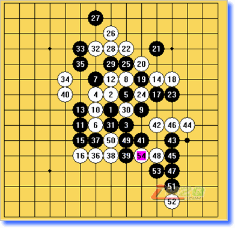
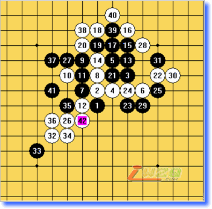
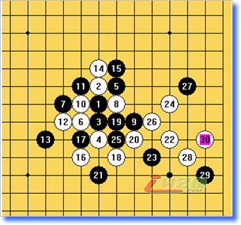
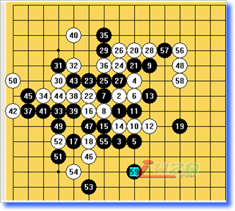
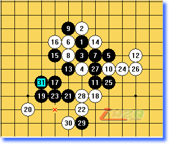

第二局对上海二队：我开出斜月后对手交换，然后下出一打和二打，这让我很郁闷，让他下一打我完全是找虐，而二打又接近和棋了，所以我很无奈的留下了二打，然后在12手的时候变了一下，希望他在13手斜活3不和我走大定式，因为我比较不喜欢和棋，结果13他还是选择了走大定，苦恼啊....下到15手的时候他突然自己变招，让我有点措手不及，下到15，这个变化我一点都不熟悉，没办法只能自己算，一直下到30这个局面后，我又开始习惯性脑袋抽筋，下出了32 34这两手自杀式的棋，给黑在上面形成一个VCT，下面形成一个VCT，没办法36，38很无奈，后面黑简单胜了
第二届全国五子棋团体赛第二轮 谭鑫麟（白）负黄宇峰（黑）

第三局对河北邯郸队：这局没花费太多精力，又赢了一分，哈哈，又有点自信了。
第二届全国五子棋团体赛第三轮 谭鑫麟（白）胜杨建锐（黑）

第四局上海三队侯新元， 我开松月后对手交换，下出二打，可能因为他对这个16手研究不深吧，让我在22手后强攻，杀了，真有点意外之喜，呵呵。
第二届全国五子棋团体赛第四轮 谭鑫麟（白）胜侯新元（黑）

第五局对河南寒月：他开瑞星，然后我下出这个12，对方19走的弱了，因为我对这个变化比较熟悉的原因，平常下棋19直接盖眠3的话都是下这个20的，他下的这个19有点不一样，可是我当时觉得区别不大，结果下到后面才发现有区别，20我在左边跳活3的话白接近必胜了，最后因为前面的失误让我心里觉得很烦躁，总想在局部杀掉他，结果下到55，我脑袋再一次抽筋，他做杀，我不挡，死了！！！
第二届全国五子棋团体赛第五轮 谭鑫麟（白）负陈涛（黑）

第六局对京系二队：以前网上就被他虐过，现实再虐次也不是什么怪事，这个13因为我没自己拆过，结果让他秒杀了
【有志注：呵呵，谭兄好像记错了，第六轮是对京系一队的李鹏吧，我们的土豆老师提供了情报】
第二届全国五子棋团体赛第六轮 谭鑫麟（白）和 李鹏（黑）

第七局河北科技大学队：最后一局对手开局直接拿两个黑子放下去，而且是两个子都不在天元，看来这次比赛是积累经验的，所以这盘拿分也没什么可说的。
证明一个:
第六轮：京系1[2.5] 0.5-0.5 炫飞2[2]
引用：啊。。谢谢了啊，麻烦有志或管理员改一下撒，偶改不了的
原文由 励精 发表于 2008-6-17 19:01:22 :证明一个:
第六轮：京系1[2.5] 0.5-0.5 炫飞2[2]

 ,真是庆幸比赛没碰到你
,真是庆幸比赛没碰到你


 楼上也是无聊
楼上也是无聊 xixi
xixi